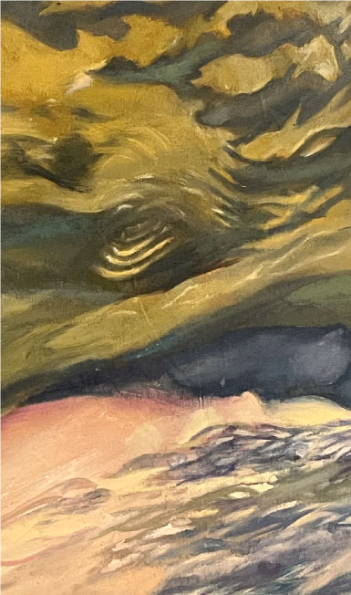
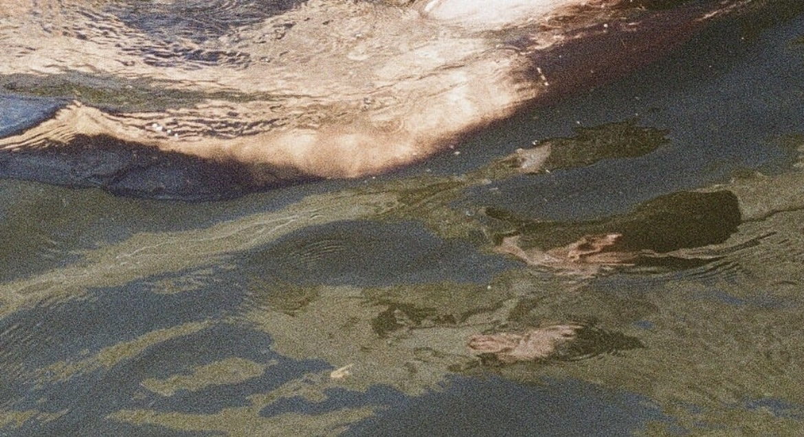
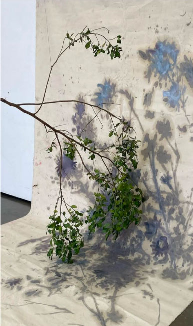
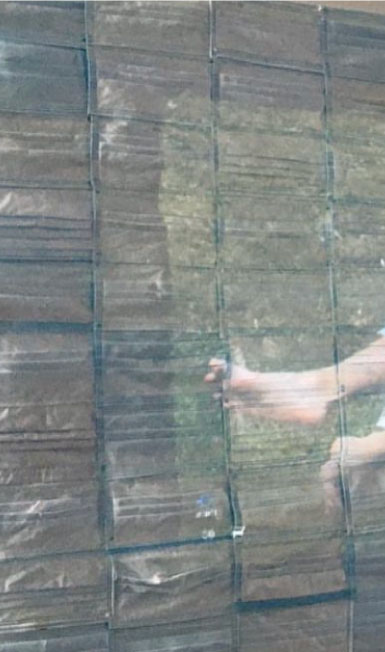
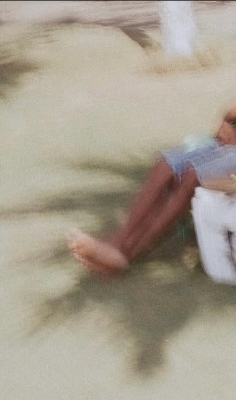

Haz clic y gira el mouse para escuchar
Este camino comienza
con la primera vez que entré a un río

El río Manaure, el Badillo y el Guatapurí no son simples accidentes geográficos, son cuerpos que recuerdan, ríos de herencia, líneas de continuidad entre lo ancestral y lo íntimo.



Video de la exposición colectiva "Ríos de Herencia".
